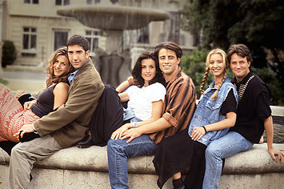

Friends is an American television sitcom, created by David Crane and Marta Kauffman.
It originally aired on NBC from September 22, 1994, to May 6, 2004, lasting ten seasons.
It was produced by Bright/Kauffman/Crane Productions, in association with Warner Bros. Television.
The ensemble cast stars Jennifer Aniston, Courteney Cox, Lisa Kudrow, Matt LeBlanc, Matthew Perry and David Schwimmer.
The show revolves around six friends living in Manhattan.



Kauffman and Crane began developing Friends under the title Insomnia Cafe between November and December 1993.
After several script rewrites and changes, including a title change to Friends Like Us, the series was finally named Friends.
Filming took place at Warner Bros. Studios in Burbank, California.
All ten seasons of Friends ranked within the top ten of the final television season ratings;
ultimately reaching the No. 1 spot with its eighth season.
The series finale on May 6, 2004, was watched by around 52.5 million American viewers,
making it the fifth most watched series finale in television history,
and the most watched television episode of the 2000s decade.
Friends received acclaim throughout its run, becoming one of the most popular television shows of all time.
The series was nominated for 62 Primetime Emmy Awards,
winning the Outstanding Comedy Series award in 2002 for its eighth season.
The show ranked no. 21 on TV Guide's 50 Greatest TV Shows of All Time
and no. 7 on Empire magazine's The 50 Greatest TV Shows of All Time.
In 1997, the episode "The One with the Prom Video" was ranked no. 100 on TV Guide's 100 Greatest Episodes of All-Time.
In 2013, Friends ranked no. 24 on the Writers Guild of America's 101 Best Written TV Series of All Time
and no. 28 on TV Guide's 60 Best TV Series of All Time.